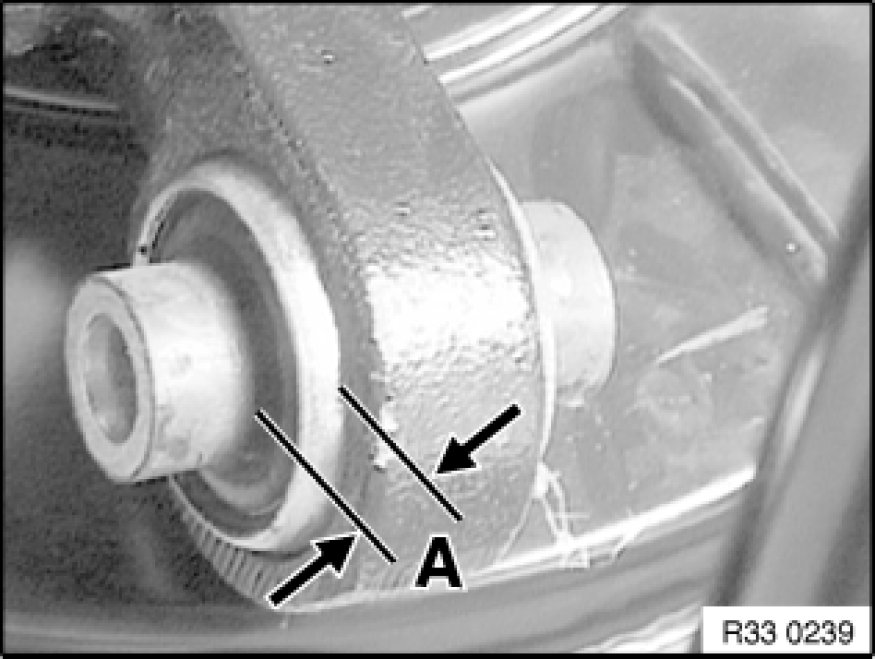
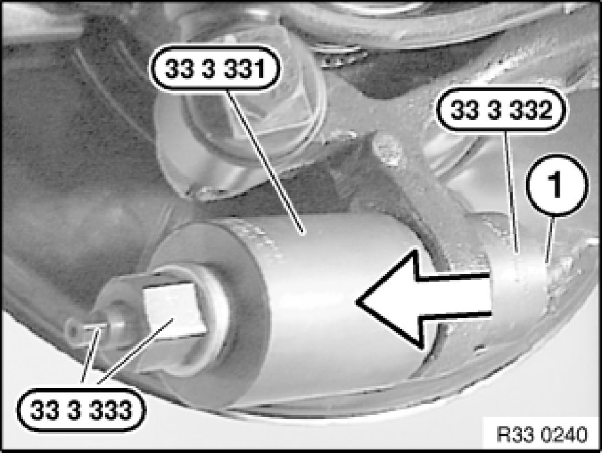
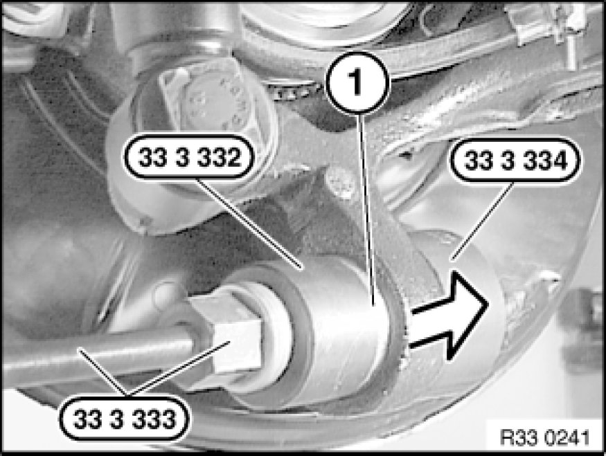

Replacing One Rubber Mount/Ball Joint In Trailing Arm for Lower Control Arm
33 32 044 - Replacing one rubber mount/ball joint in trailing arm for lower control arm

Special tools required:
- 33 3 331 33 3 330 Removal and Installation Tool
- 33 3 332 33 3 330 Removal and Installation Tool
- 33 3 333
- 33 3 334 33 3 330 Removal and Installation Tool

Note:
S54: A ball joint is fitted instead of the rubber mount.

Necessary preliminary tasks:
- Remove lower control arm from trailing arm

Measure and note protrusion (A) of old rubber mount.

Pull out rubber mount with special tools 33 3 331 33 3 330 Removal and Installation Tool, 33 3 332 33 3 330 Removal and Installation Tool, 33 3 333 and nut (1).

Draw in new rubber mount (1) with special tools 33 3 332 33 3 330 Removal and Installation Tool, 33 3 333 and 33 3 334 33 3 330 Removal and Installation Tool to previously determined protrusion (A).
After installation:
- Check that output shaft is correctly seated in rear differential.
- Perform chassis alignment check